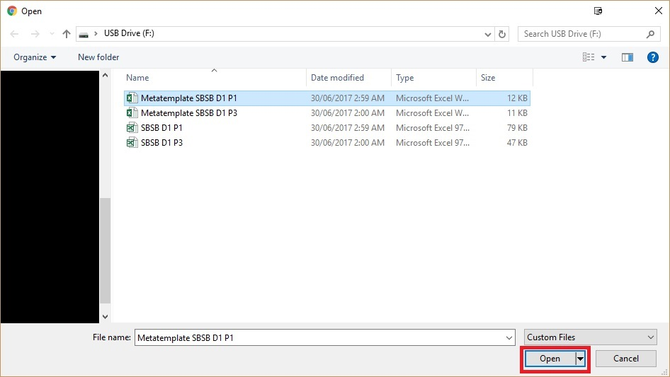

Go to https://quacksawbones.shinyapps.io/Q2_Analyser/
The Q2 Analyser web page should be loaded (shown below)
Q2 data to be analysed should be stored in an excel file (.xls(x) data file), formatted as shown in image below
If not there already, navigate to the Q2 Analyser Upload Q2 Data File page by selecting the Q2 Data tab, located at the top left of the web page
Upload the Q2 data file of interest by first selecting browse…
Find and open your Q2 data file of interest
Once upload is complete (and if Q2 data file is deemed valid), the Q2 data should be displayed as shown in the image below

Navigate to the Q2 Analyser Metadata File page by selecting the Q2 Metadata tab, located at the top left of the web page
Download the Q2 Metadata Template excel file by selecting Download Metadata Template (.xlsx)
The blank Q2 Metadata Template is shown in the image below
Complete the Q2 Metadata Template as appropriate – it should resemble the image below
Upload the completed Q2 Metadata file by selecting browse…
Find and open your Q2 Metadata file of interest
Once upload is complete (and if Q2 Metadata file is valid), the Q2 metadata should be displayed as in the image below
Input appropriate Q2 Conditions into the boxes as shown below
Analyse the Q2 data by selecting the Analysis tab
To analyse fluorescence, select Fluorescence in the pop-up menu
The fluorescence analysis plot should be displayed as shown below

Scroll over the plot to view individual values
Scroll using the small side bar to see complete well legend
Manipulate plot view or download plot using icons above the plot
Download fluorescence analysis data by selecting Download Respiration Data (should this be “Download Fluorescence Data”?)
Analyse the Q2 respiration data by selecting Respiration in the pop-up menu under the Analysis tab
The respiration analysis plots should be displayed as shown below. Scroll over plots to view individual values, manipulate plot views, or download plots using icons above the plots as outlines in step 4 (Fluorescence analysis)
Download respiration data by selecting Download Respiration Data